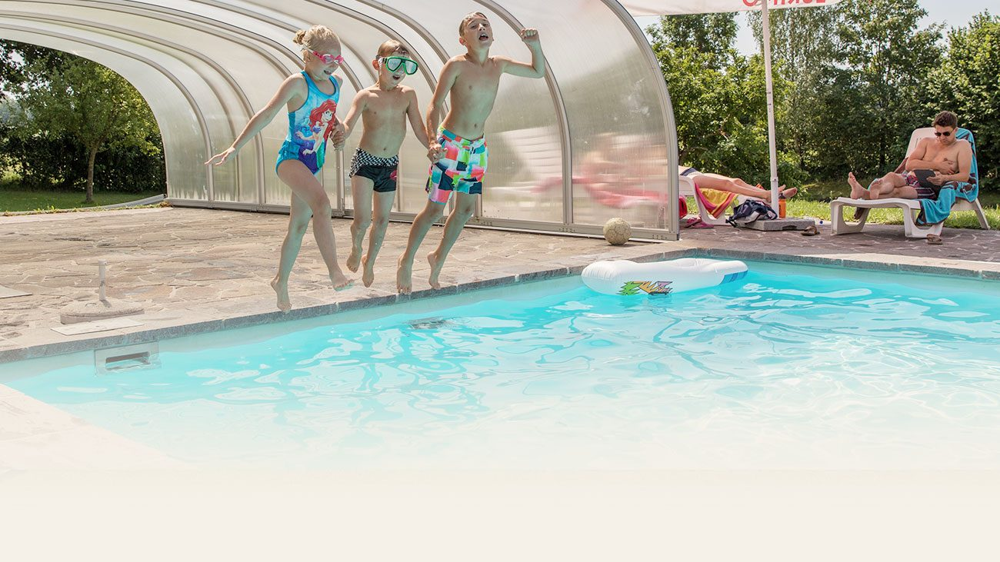
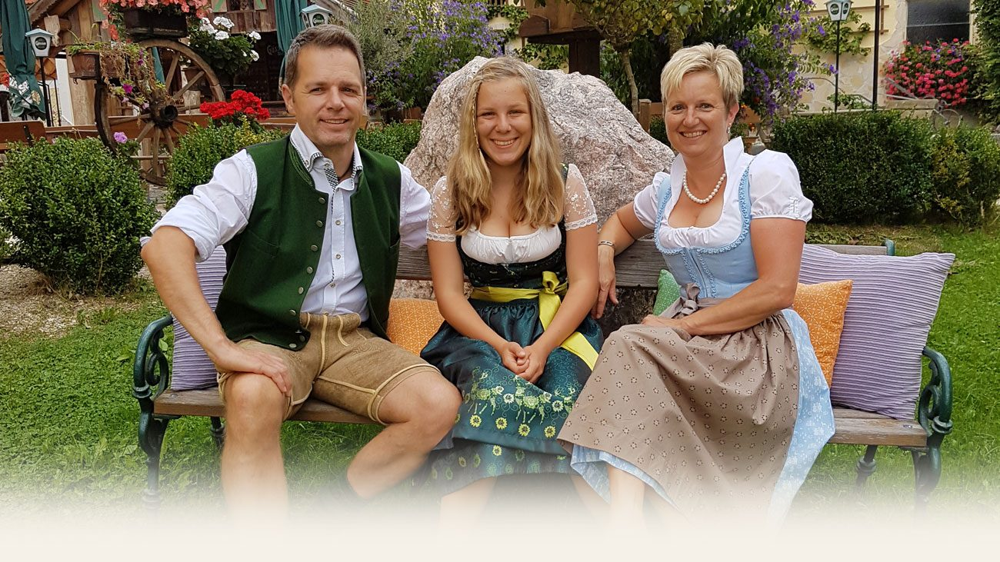
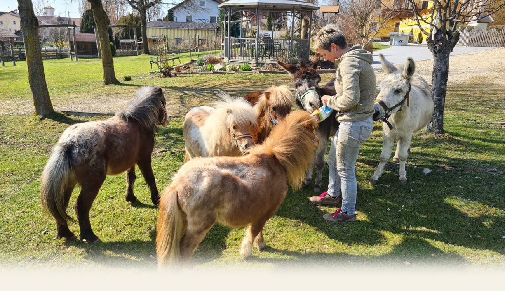

Schwimmbad & Liegewiese
Pool mit großzügiger Liegefläche, Gegenschwimmanlage und verschiebbarer Glaskuppel. Liegestühle und Sonnenschirme inklusive.

Riesige Außenanlage, eigenes Schwimmbad mit Liegestühlen für alle Hotelgäste, großzügige Komfort- und Familienzimmer mit Terrasse oder Balkon – und der Gasthof Kirchenwirt gleich im Haus. Weit abseits vom Massentourismus, mitten in der Tourismusregion S’Innviertel.
Vorschau – im Live-Betrieb geht diese Anfrage direkt an info@ferienpension.at.
Herzlich willkommen
Ob Radfahrer, Thermenurlauber, Familienurlauber, Handelsreisende oder Arbeiter von Firmen – wir freuen uns auf Sie.
Natur erleben, Erholung finden und unvergessliche Augenblicke genießen: Ein Urlaub im neu gestalteten und erweiterten Ferienhotel lässt Sie den Alltag vergessen. Ein schöner Urlaubstag beginnt mit einem Blick vom Balkon in die Natur und einem großzügigen Frühstücksbuffet – natürlich auch mit regionalen und eigenen Produkten.
Als Familienbetrieb sind wir durch unsere persönliche Betreuung immer bemüht, Ihnen den Aufenthalt so angenehm wie möglich zu gestalten.

Das erwartet Sie
Vom Sprung ins beheizbare Schwimmbad bis zum Frühstück auf der Sonnenterrasse – alles auf einem Grundstück.

Pool mit großzügiger Liegefläche, Gegenschwimmanlage und verschiebbarer Glaskuppel. Liegestühle und Sonnenschirme inklusive.

Kinderspielplatz mit Niedrigseil-Kletterparcours, dazu Zwergponys, Esel, Ziegen und Hasen. Reitplatz auf Sand, Reitstunden mit ausgebildeter Lehrerin möglich.

„All you can eat“ für jedermann und jede Frau – nicht nur für Hotelgäste. Mittwoch bis Sonntag von 8.00 bis 11.00 Uhr, im Sommer auf der Sonnenterrasse.

Zimmer
Neue Familiensuiten für 2 bis 4 Personen mit 45 bis 50 m², zwei neue Hotelappartements mit 60 m² für 2 bis 6 Personen und beliebte Komfort-Doppelzimmer von 25 bis 30 m², die auch als 3- oder 4-Bett-Familienzimmer gebucht werden können.
Sommerangebot 2026
Gültig von 01.06. bis 06.09.2026 – Verwöhn-Frühstücksbuffet, Gästekarte, Pool, Spielplatz und Streichelzoo inklusive.
7 Nächte mit Frühstücksbuffet
€ 500,– pro Person
7 Nächte, zwei getrennte Schlafräume
€ 550,– pro Person
Kinderermäßigung in allen Zimmertypen: bis 2 Jahre 100 %, bis 5 Jahre 75 %, bis 11 Jahre 50 %, bis 14 Jahre 20 %. Halbpension mit 3-gängigem Abendmenü gegen Aufpreis von € 28,– pro Person und Tag.
Gasthof Kirchenwirt
Nehmen Sie Platz in der Gaststube, im Tiroler Stüberl, in der neuen Hotel Stub’n mit Buffet oder im urigen Hof-Gastgarten. Unsere große Stärke ist die Regionalität: Viele Produkte stammen aus der unmittelbaren Region oder aus eigener Erzeugung.
| Donnerstag | 17.00 – 24.00 |
|---|---|
| Samstag | 9.00 – 24.00 |
| Sonntag | 9.00 – 16.00 |
| Mo, Di, Mi, Fr | geschlossen |
Für Hotelgäste ist am Mittwoch und Freitag von 17.00 bis 19.30 Uhr geöffnet. Für Feierlichkeiten ab ca. 30 Personen öffnen wir gerne auch am Mittwoch- und Freitagabend.
Lage
Kirchheim im Innkreis liegt inmitten der sanften Hügellandschaft des Innviertels – ideal für Radtouren, Thermentage und Ausflüge mit Kindern.
Hotelgutscheine können Sie direkt online bestellen – für Übernachtungen, das Frühstücksbuffet oder ein Essen beim Kirchenwirt.